1972–1985: Founding
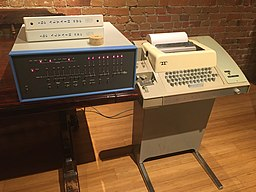
An Altair 8800 computer (left) with the popular Model 33 ASR Teletype as terminal, paper tape reader, and paper tape punch.
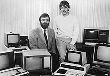
Paul Allen and Bill Gates on October 19, 1981, after signing a pivotal contract with IBM[15]:228
Childhood friends Bill Gates and Paul Allen sought to make a business using their skills in computer programming.[16] In 1972, they founded Traf-O-Data, which sold a rudimentary computer to track and analyze automobile traffic data. Gates enrolled at Harvard University while Allen pursued a degree in computer science at Washington State University, though he later dropped out to work at Honeywell.[17] The January 1975 issue of Popular Electronics featured Micro Instrumentation and Telemetry Systems's (MITS) Altair 8800 microcomputer,[18] which inspired Allen to suggest that they could program a BASIC interpreter for the device. Gates called MITS and claimed that he had a working interpreter, and MITS requested a demonstration. Allen worked on a simulator for the Altair while Gates developed the interpreter, and it worked flawlessly when they demonstrated it to MITS in March 1975 in Albuquerque, New Mexico. MITS agreed to distribute it, marketing it as Altair BASIC.[15]:108, 112–114 Gates and Allen established Microsoft on April 4, 1975, with Gates as CEO,[19] and Allen suggested the name "Micro-Soft", short for micro-computer software.[20][21] In August 1977, the company formed an agreement with ASCII Magazine in Japan, resulting in its first international office of ASCII Microsoft.[22] Microsoft moved its headquarters to Bellevue, Washington in January 1979.[19]
Microsoft entered the operating system (OS) business in 1980 with its own version of Unix called Xenix,[23] but it was MS-DOS that solidified the company's dominance. IBM awarded a contract to Microsoft in November 1980 to provide a version of the CP/M OS to be used in the IBM Personal Computer (IBM PC).[24] For this deal, Microsoft purchased a CP/M clone called 86-DOS from Seattle Computer Products which it branded as MS-DOS, although IBM rebranded it to IBM PC DOS. Microsoft retained ownership of MS-DOS following the release of the IBM PC in August 1981. IBM had copyrighted the IBM PC BIOS, so other companies had to reverse engineer it in order for non-IBM hardware to run as IBM PC compatibles, but no such restriction applied to the operating systems. Microsoft eventually became the leading PC operating systems vendor.[25][26]:210 The company expanded into new markets with the release of the Microsoft Mouse in 1983, as well as with a publishing division named Microsoft Press.[15]:232 Paul Allen resigned from Microsoft in 1983 after developing Hodgkin's disease.[27] Allen claimed in Idea Man: A Memoir by the Co-founder of Microsoft that Gates wanted to dilute his share in the company when he was diagnosed with Hodgkin's disease because he did not think that he was working hard enough.[28] Allen later invested in low-tech sectors, sports teams, commercial real estate, neuroscience, private space flight, and more.[29]
1985–1994: Windows and Office
Microsoft released Microsoft Windows on November 20, 1985, as a graphical extension for MS-DOS,[15]:242–243, 246 despite having begun jointly developing OS/2 with IBM the previous August.[30] Microsoft moved its headquarters from Bellevue to Redmond, Washington on February 26, 1986, and went public on March 13,[31] with the resulting rise in stock making an estimated four billionaires and 12,000 millionaires from Microsoft employees.[32] Microsoft released its version of OS/2 to original equipment manufacturers (OEMs) on April 2, 1987.[15] In 1990, the Federal Trade Commission examined Microsoft for possible collusion due to the partnership with IBM, marking the beginning of more than a decade of legal clashes with the government.[33] :243–244 Meanwhile, the company was at work on Microsoft Windows NT, which was heavily based on their copy of the OS/2 code. It shipped on July 21, 1993, with a new modular kernel and the 32-bit Win32 application programming interface (API), making it easier to port from 16-bit (MS-DOS-based) Windows. Microsoft informed IBM of Windows NT, and the OS/2 partnership deteriorated.[34]
In 1990, Microsoft introduced the Microsoft Office suite which bundled separate applications such as Microsoft Word and Microsoft Excel.[15]:301 On May 22, Microsoft launched Windows 3.0, featuring streamlined user interface graphics and improved protected mode capability for the Intel 386 processor,[35] and both Office and Windows became dominant in their respective areas.[36][37]
On July 27, 1994, the Department of Justice's Antitrust Division filed a competitive impact statement which said: "Beginning in 1988, and continuing until July 15, 1994, Microsoft induced many OEMs to execute anti-competitive 'per processor' licenses. Under a per processor license, an OEM pays Microsoft a royalty for each computer it sells containing a particular microprocessor, whether the OEM sells the computer with a Microsoft operating system or a non-Microsoft operating system. In effect, the royalty payment to Microsoft when no Microsoft product is being used acts as a penalty, or tax, on the OEM's use of a competing PC operating system. Since 1988, Microsoft's use of per processor licenses has increased."[38]
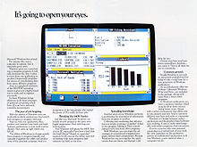
Windows 1.0was released on November 20, 1985 as the first version of the Microsoft Windows line
1995–2007: Foray into the Web, Windows 95, Windows XP, and Xbox
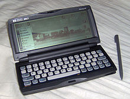
In 1996, Microsoft released
Windows CE, a version of the operating
system meant for personal digital
assistants and other tiny computers.
Following Bill Gates' internal "Internet Tidal Wave memo" on May 26, 1995, Microsoft began to redefine its offerings and expand its product line into computer networking and the World Wide Web.[39] With a few exceptions of new companies, like Netscape, Microsoft was the only major and established company that acted fast enough to be a part of the World Wide Web practically from the start. Other companies like Borland, WordPerfect, Novell, IBM and Lotus, being much slower to adapt to the new situation, would give Microsoft a market dominance.[40] The company released Windows 95 on August 24, 1995, featuring pre-emptive multitasking, a completely new user interface with a novel start button, and 32-bit compatibility; similar to NT, it provided the Win32 API.[41][42]:20 Windows 95 came bundled with the online service MSN, which was at first intended to be a competitor to the Internet,[dubious – discuss] and (for OEMs) Internet Explorer, a Web browser. Internet Explorer was not bundled with the retail Windows 95 boxes, because the boxes were printed before the team finished the Web browser, and instead was included in the Windows 95 Plus! pack.[43] Branching out into new markets in 1996, Microsoft and General Electric's NBC unit created a new 24/7 cable news channel, MSNBC.[44] Microsoft created Windows CE 1.0, a new OS designed for devices with low memory and other constraints, such as personal digital assistants.[45] In October 1997, the Justice Department filed a motion in the Federal District Court, stating that Microsoft violated an agreement signed in 1994 and asked the court to stop the bundling of Internet Explorer with Windows.[15]:323–324
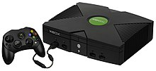
Microsoft released the first
installment in the Xbox series of
consoles in 2001. The Xbox, graphically
powerful compared to its rivals,
featured a standard PC's 733 MHz Intel
Pentium III processor.
On January 13, 2000, Bill Gates handed over the CEO position to Steve Ballmer, an old college friend of Gates and employee of the company since 1980, while creating a new position for himself as Chief Software Architect.[15]:111, 228[19] Various companies including Microsoft formed the Trusted Computing Platform Alliance in October 1999 to (among other things) increase security and protect intellectual property through identifying changes in hardware and software. Critics decried the alliance as a way to enforce indiscriminate restrictions over how consumers use software, and over how computers behave, and as a form of digital rights management: for example the scenario where a computer is not only secured for its owner, but also secured against its owner as well.[46][47] On April 3, 2000, a judgment was handed down in the case of United States v. Microsoft Corp.,[48] calling the company an "abusive monopoly."[49] Microsoft later settled with the U.S. Department of Justice in 2004.[31] On October 25, 2001, Microsoft released Windows XP, unifying the mainstream and NT lines of OS under the NT codebase.[50] The company released the Xbox later that year, entering the video game console market dominated by Sony and Nintendo.[51] In March 2004 the European Union brought antitrust legal action against the company, citing it abused its dominance with the Windows OS, resulting in a judgment of €497 million ($613 million) and requiring Microsoft to produce new versions of Windows XP without Windows Media Player: Windows XP Home Edition N and Windows XP Professional N.[52][53] In November 2005, the company's second video game console, the Xbox 360, was released. There were two versions, a basic version for $299.99 and a deluxe version for $399.99.[54]
Increasingly in the hardware business following Xbox, Microsoft in 2006 released the Zune series of digital media players, a successor of its previous software platform Portable Media Center.
2007–2011: Microsoft Azure, Windows Vista, Windows 7, and Microsoft Stores
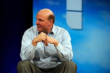
CEO Steve Ballmer at the MIX event
in 2008. In an interview about his
management style in 2005, he
mentioned that his first priority was to
get the people he delegates to in order.
Ballmer also emphasized the need to
continue pursuing new technologies
even if initial attempts fail, citing the
original attempts with Windows as an
example.[55]
Headquarters of the European
Commission, which has imposed
several fines on Microsoft
Released in January 2007, the next version of Windows, Vista, focused on features, security and a redesigned user interface dubbed Aero.[56][57] Microsoft Office 2007, released at the same time, featured a "Ribbon" user interface which was a significant departure from its predecessors. Relatively strong sales of both products helped to produce a record profit in 2007.[58] The European Union imposed another fine of €899 million ($1.4 billion) for Microsoft's lack of compliance with the March 2004 judgment on February 27, 2008, saying that the company charged rivals unreasonable prices for key information about its workgroup and backoffice servers. Microsoft stated that it was in compliance and that "these fines are about the past issues that have been resolved".[59] 2007 also saw the creation of a multi-core unit at Microsoft, following the steps of server companies such as Sun and IBM.[60]
Gates retired from his role as Chief Software Architect on June 27, 2008, a decision announced in June 2006, while retaining other positions related to the company in addition to being an advisor for the company on key projects.[61][62] Azure Services Platform, the company's entry into the cloud computing market for Windows, launched on October 27, 2008.[63] On February 12, 2009, Microsoft announced its intent to open a chain of Microsoft-branded retail stores, and on October 22, 2009, the first retail Microsoft Store opened in Scottsdale, Arizona; the same day Windows 7 was officially released to the public. Windows 7's focus was on refining Vista with ease-of-use features and performance enhancements, rather than an extensive reworking of Windows.[64][65][66]
As the smartphone industry boomed in the late 2000s, Microsoft had struggled to keep up with its rivals in providing a modern smartphone operating system, falling behind Apple and Google-sponsored Android in the United States.[67] As a result, in 2010 Microsoft revamped their aging flagship mobile operating system, Windows Mobile, replacing it with the new Windows Phone OS that was released in October that year. It used a new user interface design language, codenamed "Metro", which prominently used simple shapes, typography and iconography, utilizing the concept of minimalism. Microsoft implemented a new strategy for the software industry, providing a consistent user experience across all smartphones using the Windows Phone OS. It launched an alliance with Nokia in 2011 and Microsoft worked closely with the company to co-develop Windows Phone,[68] but remained partners with long-time Windows Mobile OEM HTC.[69] Microsoft is a founding member of the Open Networking Foundation started on March 23, 2011. Fellow founders were Google, HP Networking, Yahoo!, Verizon Communications, Deutsche Telekom and 17 other companies. This nonprofit organization is focused on providing support for a cloud computing initiative called Software-Defined Networking.[70] The initiative is meant to speed innovation through simple software changes in telecommunications networks, wireless networks, data centers and other networking areas.[71] --
2011–2014: Windows 8/8.1, Xbox One, Outlook.com, and Surface devices
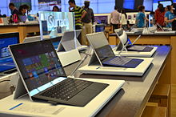
Surface Pro 3, part of the Surface
series of laplets by Microsoft
Following the release of Windows Phone, Microsoft undertook a gradual rebranding of its product range throughout 2011 and 2012, with the corporation's logos, products, services and websites adopting the principles and concepts of the Metro design language.[72] Microsoft unveiled Windows 8, an operating system designed to power both personal computers and tablet computers, in Taipei in June 2011.[73] A developer preview was released on September 13, which was subsequently replaced by a consumer preview on February 29, 2012, and released to the public in May.[74] The Surface was unveiled on June 18, becoming the first computer in the company's history to have its hardware made by Microsoft.[75][76] On June 25, Microsoft paid US$1.2 billion to buy the social network Yammer.[77] On July 31, they launched the Outlook.com webmail service to compete with Gmail.[78] On September 4, 2012, Microsoft released Windows Server 2012.[79]
In July 2012, Microsoft sold its 50% stake in MSNBC, which it had run as a joint venture with NBC since 1996.[80] On October 1, Microsoft announced its intention to launch a news operation, part of a new-look MSN, with Windows 8 later in the month.[81] On October 26, 2012, Microsoft launched Windows 8 and the Microsoft Surface.[76][82] Three days later, Windows Phone 8 was launched.[83] To cope with the potential for an increase in demand for products and services, Microsoft opened a number of "holiday stores" across the U.S. to complement the increasing number of "bricks-and-mortar" Microsoft Stores that opened in 2012.[84] On March 29, 2013, Microsoft launched a Patent Tracker.[85]
In August 2012, the New York City Police Department announced a partnership with Microsoft for the development of the Domain Awareness System which is used for Police surveillance in New York City.[86]
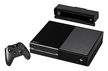
The Xbox One console,
released in 2013
The Kinect, a motion-sensing input device made by Microsoft and designed as a video game controller, first introduced in November 2010, was upgraded for the 2013 release of the Xbox One video game console. Kinect's capabilities were revealed in May 2013: an ultra-wide 1080p camera, function in the dark due to an infrared sensor, higher-end processing power and new software, the ability to distinguish between fine movements (such as a thumb movements), and determining a user's heart rate by looking at their face.[87] Microsoft filed a patent application in 2011 that suggests that the corporation may use the Kinect camera system to monitor the behavior of television viewers as part of a plan to make the viewing experience more interactive. On July 19, 2013, Microsoft stocks suffered its biggest one-day percentage sell-off since the year 2000, after its fourth-quarter report raised concerns among the investors on the poor showings of both Windows 8 and the Surface tablet. Microsoft suffered a loss of more than US$32 billion.
In line with the maturing PC business, in July 2013, Microsoft announced that it would reorganize the business into four new business divisions, namely Operating System, Apps, Cloud, and Devices. All previous divisions will be dissolved into new divisions without any workforce cuts.[89] On September 3, 2013, Microsoft agreed to buy Nokia's mobile unit for $7 billion,[90] following Amy Hood taking the role of CFO.[91]
2014–present: Windows 10, Microsoft Edge and HoloLens
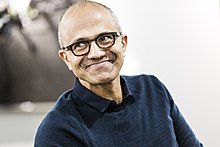
Satya Nadellasucceeded Steve Ballmer as the CEO of Microsoft in February 2014
On February 4, 2014, Steve Ballmer stepped down as CEO of Microsoft and was succeeded by Satya Nadella, who previously led Microsoft's Cloud and Enterprise division.[92] On the same day, John W. Thompson took on the role of chairman, in place of Bill Gates, who continued to participate as a technology advisor.[93] Thompson became the second chairman in Microsoft's history.[94] On April 25, 2014, Microsoft acquired Nokia Devices and Services for $7.2 billion.[95] This new subsidiary was renamed Microsoft Mobile Oy.[96] On September 15, 2014, Microsoft acquired the video game development company Mojang, best known for Minecraft, for $2.5 billion.[97] On June 8, 2017, Microsoft acquired Hexadite, an Israeli security firm, for $100 million.[98][99]
On January 21, 2015, Microsoft announced the release of their first Interactive whiteboard, Microsoft Surface Hub.[100] On July 29, 2015, Windows 10 was released,[101] with its server sibling, Windows Server 2016, released in September 2016. In Q1 2015, Microsoft was the third largest maker of mobile phones, selling 33 million units (7.2% of all). While a large majority (at least 75%) of them do not run any version of Windows Phone— those other phones are not categorized as smartphones by Gartner – in the same time frame 8 million Windows smartphones (2.5% of all smartphones) were made by all manufacturers (but mostly by Microsoft).[102] Microsoft's share of the U.S. smartphone market in January 2016 was 2.7%.[103] During the summer of 2015 the company lost $7.6 billion related to its mobile-phone business, firing 7,800 employees.[104]
On March 1, 2016, Microsoft announced the merger of its PC and Xbox divisions, with Phil Spencer announcing that Universal Windows Platform (UWP) apps would be the focus for Microsoft's gaming in the future.[105] On January 24, 2017, Microsoft showcased Intune for Education at the BETT 2017 education technology conference in London.[106] Intune for Education is a new cloud-based application and device management service for the education sector.[107] In May 2016, the company announced it was laying off 1,850 workers, and taking an impairment and restructuring charge of $950 million.[104] In June 2016, Microsoft announced a project named Microsoft Azure Information Protection. It aims to help enterprises protect their data as it moves between servers and devices.[108] In November 2016, Microsoft joined the Linux Foundation as a Platinum member during Microsoft's Connect(); developer event in New York.[109] The cost of each Platinum membership is US$500,000 per year.[110] Some analysts deemed this unthinkable ten years prior, however, as in 2001 then-CEO Steve Ballmer called Linux "cancer".[111] Microsoft planned to launch a preview of Intune for Education "in the coming weeks", with general availability scheduled for spring 2017, priced at $30 per device, or through volume licensing agreements.[112]
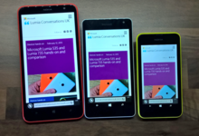
The Nokia Lumia 1320, the Microsoft Lumia 535 and the Nokia Lumia 530,
which all run on one of the now-discontinued Windows Phone operating systems
In January 2018, Microsoft patched Windows 10 to account for CPU problems related to Intel's Meltdown security breach. The patch led to issues with the Microsoft Azure virtual machines reliant on Intel's CPU architecture. On January 12, Microsoft released PowerShell Core 6.0 for the macOS and Linux operating systems.[113] In February 2018, Microsoft killed notification support for their Windows Phone devices which effectively ended firmware updates for the discontinued devices.[113] In March 2018, Microsoft recalled Windows 10 S to change it to a mode for the Windows operating system rather than a separate and unique operating system. In March the company also established guidelines that censor users of Office 365 from using profanity in private documents.[113] In April 2018, Microsoft released the source code for Windows File Manager under the MIT License to celebrate the program's 20th anniversary. In April the company further expressed willingness to embrace open source initiatives by announcing Azure Sphere as its own derivative of the Linux operating system.[113] In May 2018, Microsoft partnered with 17 American intelligence agencies to develop cloud computing products. The project is dubbed "Azure Government" and has ties to the Joint Enterprise Defense Infrastructure (JEDI) surveillance program.[113] On June 4, 2018, Microsoft officially announced the acquisition of GitHub for $7.5 billion, a deal that closed on October 26, 2018.[114][115] On July 10, 2018, Microsoft revealed the Surface Go platform to the public. Later in the month it converted Microsoft Teams to gratis.[113] In August 2018, Microsoft released two projects called Microsoft AccountGuard and Defending Democracy. It also unveiled Snapdragon 850 compatibility for Windows 10 on the ARM architecture.[116][117][113]
Apollo 11 astronaut Buzz Aldrin using a Microsoft HoloLens mixed reality headset in September 2016
In August 2018, Toyota Tsusho began a partnership with Microsoft to create fish farming tools using the Microsoft Azure application suite for Internet of things (IoT) technologies related to water management. Developed in part by researchers from Kindai University, the water pump mechanisms use artificial intelligence to count the number of fish on a conveyor belt, analyze the number of fish, and deduce the effectiveness of water flow from the data the fish provide. The specific computer programs used in the process fall under the Azure Machine Learning and the Azure IoT Hub platforms.[118] In September 2018, Microsoft discontinued Skype Classic.[113] On October 10, 2018, Microsoft joined the Open Invention Network community despite holding more than 60,000 patents.[119] In November 2018, Microsoft agreed to supply 100,000 Microsoft HoloLens headsets to the United States military in order to "increase lethality by enhancing the ability to detect, decide and engage before the enemy."[120] In November 2018, Microsoft introduced Azure Multi-Factor Authentication for Microsoft Azure.[121] In December 2018, Microsoft announced Project Mu, an open source release of the Unified Extensible Firmware Interface (UEFI) core used in Microsoft Surface and Hyper-V products. The project promotes the idea of Firmware as a Service.[122] In the same month, Microsoft announced the open source implementation of Windows Forms and the Windows Presentation Foundation (WPF) which will allow for further movement of the company toward the transparent release of key frameworks used in developing Windows desktop applications and software. December also saw the company discontinue the Microsoft Edge project in favor of Chromium backends for their browsers.[121]
February 20, 2019 Microsoft Corp said it will offer its cyber security service AccountGuard to 12 new markets in Europe including Germany, France and Spain, to close security gaps and protect customers in political space from hacking.[123] In February 2019, hundreds of Microsoft employees protested the company's war profiteering from a $480 million contract to develop virtual reality headsets for the United States Army.[124]
On March 26, 2020, Microsoft announced it was acquiring Affirmed Networks for about $1.35 billion.[125][126]
Due to the COVID-19 pandemic, Microsoft closed all of its retail stores indefinitely due to health concerns.[127]
On July 22, 2020, Microsoft announced plans to close its Mixer service, planning to move existing partners to Facebook Gaming.[128]
On July 31, 2020, it was reported that Microsoft was in talks to acquire TikTok after the Trump administration ordered ByteDance to divest ownership of the application to the U.S.[129] On August 3, 2020, after speculation on the deal, Donald Trump stated that Microsoft could buy the application, however it should be completed by September 15, 2020 and that the United States Department of the Treasury should receive a portion if it were to go through.[130]
On August 5, 2020, Microsoft stopped its xCloud game streaming test for iOS devices. According to Microsoft, the future of xCloud on iOS remains unclear and potentially out of Microsoft's hands. Apple has imposed a strict limit on "remote desktop clients" that means applications are only allowed to connect to a user-owned host device or gaming console owned by the user.[131]
On September 21, 2020, Microsoft announced it was acquiring Zenimax Media for about $7.5 billion.
On September 22, 2020, Microsoft announced that it had an exclusive license to use OpenAI’s GPT-3 artificial intelligence language generator.[132] The previous version of GPT-3, called GPT-2, made headlines for being “too dangerous to release” and had numerous capabilities, including designing websites, prescribing medication, answering questions and penning articles.[133]
Corporate affairs
See also: Criticism of Microsoft; Internet censorship in China; and Embrace, extend, and extinguish
Board of directors
The company is run by a board of directors made up of mostly company outsiders, as is customary for publicly traded companies. Members of the board of directors as of July 2020 are Satya Nadella, Reid Hoffman, Hugh Johnston, Teri List-Stoll, Sandi Peterson, Penny Pritzker, Charles Scharf, Arne Sorenson, John W. Stanton, John W. Thompson, Emma Walmsley and Padmasree Warrior.[134] Board members are elected every year at the annual shareholders' meeting using a majority vote system. There are four committees within the board which oversee more specific matters. These committees include the Audit Committee, which handles accounting issues with the company including auditing and reporting; the Compensation Committee, which approves compensation for the CEO and other employees of the company; the Governance and Nominating Committee, which handles various corporate matters including nomination of the board; and the Regulatory and Public Policy Committee, which includes legal/antitrust matters, along with privacy, trade, digital safety, artificial intelligence, and environmental sustainability. [135]
On March 13, 2020, Gates announced that he is leaving the board of directors of Microsoft and Berkshire Hathaway in order to focus more on his philanthropic efforts. According to Aaron Tilley of The Wall Street Journal this is "marking the biggest boardroom departure in the tech industry since the death of longtime rival and Apple Inc. co-founder Steve Jobs."[136]
Chief executives
- Bill Gates(1975–2000)
- Steve Ballmer (2000–2014)
- Satya Nadella (2014– present)
Financial
When Microsoft went public and launched its initial public offering (IPO) in 1986, the opening stock price was $21; after the trading day, the price closed at $27.75. As of July 2010, with the company's nine stock splits, any IPO shares would be multiplied by 288; if one were to buy the IPO today, given the splits and other factors, it would cost about 9 cents.[15]:235–236[138][139] The stock price peaked in 1999 at around $119 ($60.928, adjusting for splits).[140] The company began to offer a dividend on January 16, 2003, starting at eight cents per share for the fiscal year followed by a dividend of sixteen cents per share the subsequent year, switching from yearly to quarterly dividends in 2005 with eight cents a share per quarter and a special one-time payout of three dollars per share for the second quarter of the fiscal year.[140][141] 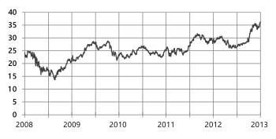
Five year history graph of NASDAQ: MSFT stock on July 17, 2013[137]
Though the company had subsequent increases in dividend payouts, the price of Microsoft's stock remained steady for years.[141][142]
Standard & Poor's and Moody's Investors Service have both given a AAA rating to Microsoft, whose assets were valued at $41 billion as compared to only $8.5 billion in unsecured debt. Consequently, in February 2011 Microsoft released a corporate bond amounting to $2.25 billion with relatively low borrowing rates compared to government bonds.[143] For the first time in 20 years Apple Inc. surpassed Microsoft in Q1 2011 quarterly profits and revenues due to a slowdown in PC sales and continuing huge losses in Microsoft's Online Services Division (which contains its search engine Bing). Microsoft profits were $5.2 billion, while Apple Inc. profits were $6 billion, on revenues of $14.5 billion and $24.7 billion respectively.[144] Microsoft's Online Services Division has been continuously loss-making since 2006 and in Q1 2011 it lost $726 million. This follows a loss of $2.5 billion for the year 2010.[145]
On July 20, 2012, Microsoft posted its first quarterly loss ever, despite earning record revenues for the quarter and fiscal year, with a net loss of $492 million due to a writedown related to the advertising company aQuantive, which had been acquired for $6.2 billion back in 2007.[146] As of January 2014, Microsoft's market capitalization stood at $314B,[147] making it the 8th largest company in the world by market capitalization.[148] On November 14, 2014, Microsoft overtook ExxonMobil to become the second most-valuable company by market capitalization, behind only Apple Inc. Its total market value was over $410B—with the stock price hitting $50.04 a share, the highest since early 2000.[149] In 2015, Reuters reported that Microsoft Corp had earnings abroad of $76.4 billion which were untaxed by the Internal Revenue Service. Under U.S. law, corporations don't pay income tax on overseas profits until the profits are brought into the United States.[150]
| Year |
Revenue
in mil. US$[151 |
Net income
in mil. US$[151 |
Total Assets
in mil. US$[151 |
Employees[151 |
| 2005 |
39788 |
12,254 |
70,815 |
61,000 |
| 2006 |
44,282 |
12,599 |
69,597 |
71,000 |
| 2007 |
51,122 |
14,065 |
63,171 |
79000 |
| 2008 |
60,420 |
17,681 |
72,793 |
91,000 |
| 2009 |
58,437 |
14,569 |
77,888 |
93,000 |
| 2010 |
62,484 |
18,760 |
86,113 |
89,000 |
| 2011 |
69,943 |
23,150 |
108,704 |
90,000 |
| 2012 |
73,723 |
16,978 |
121,271 |
94,000 |
| 2013 |
77,849 |
21,863 |
142,431 |
99,000 |
| 2014 |
86,833 |
22,074 |
172,384 |
128,000 |
| 2015 |
93,580 |
12,193 |
174,472 |
118,000 |
| 2016 |
91,154 |
20,539 |
193,468 |
114,000 |
| 2017 |
96,571 |
25,489 |
250,312 |
124,000 |
| 2017 |
110,360 |
16571 |
258,848 |
131,000 |
| 2018 |
110,360 |
16,571 |
258,848 |
131,000 |
| 2019 |
125,843 |
39,240 |
286,556 |
144,106 |
In November 2018, the company won a $480 million military contract with the U.S. government to bring augmented reality (AR) headset technology into the weapon repertoires of American soldiers. The two-year contract may result in follow-on orders of more than 100,000 headsets, according to documentation describing the bidding process. One of the contract's tag lines for the augmented reality technology seems to be its ability to enable "25 bloodless battles before the 1st battle", suggesting that actual combat training is going to be an essential aspect of the augmented reality headset capabilities.[152]
Subsidiaries
Microsoft is an international business. As such, it needs subsidiaries present in whatever national markets it chooses to harvest. An example is Microsoft Canada, which it established in 1985.[153] Other countries have similar installations, to funnel profits back up to Redmond and to distribute the dividends to the holders of MSFT stock.
As well as national subsidiaries, Microsoft has found it worthwhile to group its patent attorneys into Microsoft Technology Licensing (MTL), which is run as an LLC.[154] In 2020, the NASDAQ stock exchange rated MTL as number four on its list of firms with the most number of patent documents filed.[155]
Marketing
In 2004, Microsoft commissioned research firms to do independent studies comparing the total cost of ownership (TCO) of Windows Server 2003 to Linux; the firms concluded that companies found Windows easier to administrate than Linux, thus those using Windows would administrate faster resulting in lower costs for their company (i.e. lower TCO).[156] This spurred a wave of related studies; a study by the Yankee Group concluded that upgrading from one version of Windows Server to another costs a fraction of the switching costs from Windows Server to Linux, although companies surveyed noted the increased security and reliability of Linux servers and concern about being locked into using Microsoft products.[157] Another study, released by the Open Source Development Labs, claimed that the Microsoft studies were "simply outdated and one-sided" and their survey concluded that the TCO of Linux was lower due to Linux administrators managing more servers on average and other reasons.[158]
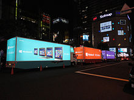
Windows 8 Launch Event in Akihabara, Tokyo on October 25, 2012
As part of the "Get the Facts" campaign, Microsoft highlighted the .NET Framework trading platform that it had developed in partnership with Accenture for the London Stock Exchange, claiming that it provided "five nines" reliability. After suffering extended downtime and unreliability[159][160] the London Stock Exchange announced in 2009 that it was planning to drop its Microsoft solution and switch to a Linux-based one in 2010.[161][162]
In 2012, Microsoft hired a political pollster named Mark Penn, whom The New York Times called "famous for bulldozing" his political opponents[163] as Executive Vice-President, Advertising and Strategy. Penn created a series of negative advertisements targeting one of Microsoft's chief competitors, Google. The advertisements, called "Scroogled", attempt to make the case that Google is "screwing" consumers with search results rigged to favor Google's paid advertisers, that Gmail violates the privacy of its users to place ad results related to the content of their emails and shopping results, which favor Google products. Tech publications like TechCrunch have been highly critical of the advertising campaign,[164] while Google employees have embraced it.[165]
Layoffs
Main article: Criticism of Microsoft
In July 2014, Microsoft announced plans to lay off 18,000 employees. Microsoft employed 127,104 people as of June 5, 2014, making this about a 14 percent reduction of its workforce as the biggest Microsoft lay off ever. This included 12,500 professional and factory personnel. Previously, Microsoft had eliminated 5,800 jobs in 2009 in line with the Great Recession of 2008–2017.[166][167] In September 2014, Microsoft laid off 2,100 people, including 747 people in the Seattle–Redmond area, where the company is headquartered. The firings came as a second wave of the layoffs that were previously announced. This brought the total number to over 15,000 out of the 18,000 expected cuts.[168] In October 2014, Microsoft revealed that it was almost done with the elimination of 18,000 employees, which was its largest-ever layoff sweep.[169] In July 2015, Microsoft announced another 7,800 job cuts in the next several months.[170] In May 2016, Microsoft announced another 1,850 job cuts mostly in (Nokia) mobile phone division. As a result, the company will record an impairment and restructuring charge of approximately $950 million, of which approximately $200 million will relate to severance payments.[171]
United States government
Main article: Criticism of Microsoft
Microsoft provides information about reported bugs in their software to intelligence agencies of the United States government, prior to the public release of the fix. A Microsoft spokesperson has stated that the corporation runs several programs that facilitate the sharing of such information with the U.S. government.[172] Following media reports about PRISM, NSA's massive electronic surveillance program, in May 2013, several technology companies were identified as participants, including Microsoft.[173] According to leaks of said program, Microsoft joined the PRISM program in 2007.[174] However, in June 2013, an official statement from Microsoft flatly denied their participation in the program.
"We provide customer data only when we receive a legally binding order or subpoena to do so, and never on a voluntary basis. In addition we only ever comply with orders for requests about specific accounts or identifiers. If the government has a broader voluntary national security program to gather customer data, we don't participate in it."[175]
During the first six months in 2013, Microsoft had received requests that affected between 15,000 and 15,999 accounts.[176] In December 2013, the company made statement to further emphasize the fact that they take their customers' privacy and data protection very seriously, even saying that "government snooping potentially now constitutes an "advanced persistent threat," alongside sophisticated malware and cyber attacks".[177] The statement also marked the beginning of three-part program to enhance Microsoft's encryption and transparency efforts. On July 1, 2014, as part of this program they opened the first (of many) Microsoft Transparency Center, that provides "participating governments with the ability to review source code for our key products, assure themselves of their software integrity, and confirm there are no "back doors."[178] Microsoft has also argued that the United States Congress should enact strong privacy regulations to protect consumer data.[179]
In April 2016, the company sued the U.S. government, arguing that secrecy orders were preventing the company from disclosing warrants to customers in violation of the company's and customers' rights. Microsoft argued that it was unconstitutional for the government to indefinitely ban Microsoft from informing its users that the government was requesting their emails and other documents, and that the Fourth Amendment made it so people or businesses had the right to know if the government searches or seizes their property. On October 23, 2017, Microsoft said it would drop the lawsuit as a result of a policy change by the United States Department of Justice (DoJ). The DoJ had "changed data request rules on alerting Internet users about agencies accessing their information."
Corporate identity
Corporate culture
Technical reference for developers and articles for various Microsoft magazines such as Microsoft Systems Journal (MSJ) are available through the Microsoft Developer Network (MSDN). MSDN also offers subscriptions for companies and individuals, and the more expensive subscriptions usually offer access to pre-release beta versions of Microsoft software.[180][181] In April 2004 Microsoft launched a community site for developers and users, titled Channel 9, that provides a wiki and an Internet forum.[182] Another community site that provides daily videocasts and other services, On10.net, launched on March 3, 2006.[183] Free technical support is traditionally provided through online Usenet newsgroups, and CompuServe in the past, monitored by Microsoft employees; there can be several newsgroups for a single product. Helpful people can be elected by peers or Microsoft employees for Microsoft Most Valuable Professional (MVP) status, which entitles them to a sort of special social status and possibilities for awards and other benefits.[184]
Noted for its internal lexicon, the expression "eating your own dog food" is used to describe the policy of using pre-release and beta versions of products inside Microsoft in an effort to test them in "real-world" situations.[185] This is usually shortened to just "dog food" and is used as noun, verb, and adjective. Another bit of jargon, FYIFV or FYIV ("Fuck You, I'm [Fully] Vested"), is used by an employee to indicate they are financially independent and can avoid work anytime they wish.[186] The company is also known for its hiring process, mimicked in other organizations and dubbed the "Microsoft interview", which is notorious for off-the-wall questions such as "Why is a manhole cover round?".[187]
Microsoft is an outspoken opponent of the cap on H-1B visas, which allow companies in the U.S. to employ certain foreign workers. Bill Gates claims the cap on H1B visas makes it difficult to hire employees for the company, stating "I'd certainly get rid of the H1B cap" in 2005.[188] Critics of H1B visas argue that relaxing the limits would result in increased unemployment for U.S. citizens due to H1B workers working for lower salaries.[189] The Human Rights Campaign Corporate Equality Index, a report of how progressive the organization deems company policies towards LGBT employees, rated Microsoft as 87% from 2002 to 2004 and as 100% from 2005 to 2010 after they allowed gender expression.[190]
In August 2018, Microsoft implemented a policy for all companies providing subcontractors to require 12 weeks of paid parental leave to each employee. This expands on the former requirement from 2015 requiring 15 days of paid vacation and sick leave each year.[191] In 2015, Microsoft established its own parental leave policy to allow 12 weeks off for parental leave with an additional 8 weeks for the parent who gave birth.[192]
Environment
In 2011, Greenpeace released a report rating the top ten big brands in cloud computing on their sources of electricity for their data centers. At the time, data centers consumed up to 2% of all global electricity and this amount was projected to increase. Phil Radford of Greenpeace said "we are concerned that this new explosion in electricity use could lock us into old, polluting energy sources instead of the clean energy available today,"[193] and called on "Amazon, Microsoft and other leaders of the information-technology industry must embrace clean energy to power their cloud-based data centers."[194] In 2013, Microsoft agreed to buy power generated by a Texas wind project to power one of its data centers.[195] Microsoft is ranked on the 17th place in Greenpeace's Guide to Greener Electronics (16th Edition) that ranks 18 electronics manufacturers according to their policies on toxic chemicals, recycling and climate change.[196] Microsoft's timeline for phasing out brominated flame retardant (BFRs) and phthalates in all products is 2012 but its commitment to phasing out PVC is not clear. As of January 2011, it has no products that are completely free from PVC and BFRs.[197]
Microsoft's main U.S. campus received a silver certification from the Leadership in Energy and Environmental Design (LEED) program in 2008, and it installed over 2,000 solar panels on top of its buildings at its Silicon Valley campus, generating approximately 15 percent of the total energy needed by the facilities in April 2005.[198] Microsoft makes use of alternative forms of transit. It created one of the world's largest private bus systems, the "Connector", to transport people from outside the company; for on-campus transportation, the "Shuttle Connect" uses a large fleet of hybrid cars to save fuel. The company also subsidizes regional public transport, provided by Sound Transit and King County Metro, as an incentive.[198][199] In February 2010 however, Microsoft took a stance against adding additional public transport and high-occupancy vehicle (HOV) lanes to the State Route 520 and its floating bridge connecting Redmond to Seattle; the company did not want to delay the construction any further.[200] Microsoft was ranked number 1 in the list of the World's Best Multinational Workplaces by the Great Place to Work Institute in 2011.[201] In January 2020, the company promised to remove from the environment all of the carbon that it has emitted since its foundation in 1975.[202]
Headquarters
The corporate headquarters, informally known as the Microsoft Redmond campus, is located at One Microsoft Way in Redmond, Washington. Microsoft initially moved onto the grounds of the campus on February 26, 1986, weeks before the company went public on March 13. The headquarters has since experienced multiple expansions since its establishment. It is estimated to encompass over 8 million ft2 (750,000 m2) of office space and 30,000–40,000 employees.[203] Additional offices are located in Bellevue and Issaquah, Washington (90,000 employees worldwide). The company is planning to upgrade its Mountain View, California, campus on a grand scale. The company has occupied this campus since 1981. In 2016, the company bought the 32-acre campus, with plans to renovate and expand it by 25%.[204] Microsoft operates an East Coast headquarters in Charlotte, North Carolina.[205]
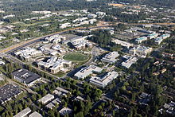
The west campus of the Microsoft Redmond Campus
Flagship stores
On October 26, 2015, the company opened its retail location on Fifth Avenue in New York City. The location features a five-story glass storefront and is 22,270 square feet.[206] As per company executives, Microsoft had been on the lookout for a flagship location since 2009.[207] The company's retail locations are part of a greater strategy to help build a connection with its consumers. The opening of the store coincided with the launch of the Surface Book and Surface Pro 4.[208] On November 12, 2015, Microsoft opened a second flagship store, located in Sydney's Pitt Street Mall.[209]
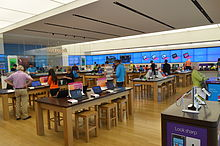
Microsoft's Toronto flagship store
Logo
Microsoft adopted the so-called "Pac-Man Logo," designed by Scott Baker, in 1987. Baker stated "The new logo, in Helvetica italic typeface, has a slash between the o and s to emphasize the "soft" part of the name and convey motion and speed."[210] Dave Norris ran an internal joke campaign to save the old logo, which was green, in all uppercase, and featured a fanciful letter O, nicknamed the blibbet, but it was discarded.[211] Microsoft's logo with the tagline "Your potential. Our passion."—below the main corporate name—is based on a slogan Microsoft used in 2008. In 2002, the company started using the logo in the United States and eventually started a television campaign with the slogan, changed from the previous tagline of "Where do you want to go today?"[212][213][214] During the private MGX (Microsoft Global Exchange) conference in 2010, Microsoft unveiled the company's next tagline, "Be What's Next."[215] They also had a slogan/tagline "Making it all make sense."[216]
On August 23, 2012, Microsoft unveiled a new corporate logo at the opening of its 23rd Microsoft store in Boston, indicating the company's shift of focus from the classic style to the tile-centric modern interface, which it uses/will use on the Windows Phone platform, Xbox 360, Windows 8 and the upcoming Office Suites.[217] The new logo also includes four squares with the colors of the then-current Windows logo which have been used to represent Microsoft's four major products: Windows (blue), Office (red), Xbox (green) and Bing (yellow).[218] The logo resembles the opening of one of the commercials for Windows 95.[219][220]
Microsoft logo history
1975–1980: First Microsoft logo, in 1975
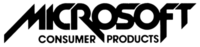
1980–1982: Second Microsoft logo, in 1980
1982–1987: Third Microsoft logo, in 1982
1987–2012: Microsoft "Pac-Man" logo, designed by Scott Baker and used from 1987 to 2012[212][213]
2012–present: Fifth Microsoft logo, introduced on August 23, 2012[221]
Sponsorship
The company was the official jersey sponsor of Finland's national basketball team at EuroBasket 2015
Philanthropy
During the COVID-19 pandemic, Microsoft's president, Brad Smith, announced that an initial batch of supplies, including 15,000 protection goggles, infrared thermometers, medical caps, and protective suits, were donated to Seattle, with further aid to come soon.[223]